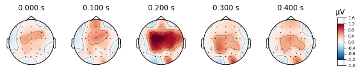
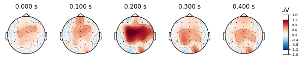

MNE Workflow tutorial
Contents
MNE Workflow tutorial¶
Tutorial: Calculating evoked potentials ans Mismatch negativity in an auditory oddball task
Data preparation
load raw data
crop data
set eog reference
set eeg montage
Preprocessing
referencing
filter data
find and interpolate bad channels
artifact detection/repair with ICA
Epoching
Calculate evoked potentials/MMN
Save Data
Setup¶
First we’ll import necessary libraries/functions
import os
import numpy as np
import matplotlib.pyplot as plt
import pandas as pd
import scipy
# this allows for interactive pop-up plots
#%matplotlib qt
# allows for rendering in output-cell
%matplotlib inline
# import mne library
import mne
from mne_bids import BIDSPath, write_raw_bids, print_dir_tree, make_report, read_raw_bids
Data?¶
This tutorial uses data from the ERP Core set collected by Kappenmann et al. (Kappenman et al., 2021). The ERP Core dataset contains data on a number of EEG experiments exploring different event-related and evoked potentials such as the Error-Related Negativity (ERN (Flanker task)), the P3b (Active Visual Oddball Paradigm), or the mismatch negativity (Passive Auditory Oddball Paradigm).
The dataset can be found on OSF. For an explanation of the study, the EEG and ERP processing and anlysis procedures, see the Readme.txt file provided by the authors.
Kappenman, E., Farrens, J., Zhang, W., Stewart, A. X., & Luck, S. J. (2021). ERP CORE: An open resource for human event-related potential research. NeuroImage 225: 117465. https://doi.org/10.1016/j.neuroimage.2020.117465
We’ll be using eeg data from a single subject preforming a passive auditory oddball task. In this experiment subjects were presented with two tones differing in amplitude. Most of the time a “standard” tone was presented (80 dB, p = .8; ~800 trials), while a “deviant” tone was pseudo-randomly (apparently) presented some of the time (70 dB, p = .2, ~ 200 trials). In theory this violation of a learned rule (i.e. a 70 dB tone is presented in a stream of repeated 80 dB tone events) manifests in a potential called the mismatch negativity (MMN) over fronto-central electrodes, which is calculated by subtracting the response to the common (or standard) from the response to the odd (or deviant) stimuli. The MMN is thought to reflect “the brain’s ability to perform automatic comparisons between consecutive stimuli and provides an electrophysiological index of sensory learning and perceptual accuracy” (Garrido et al. 2009; see paper for more information).
Download the dataset
Now as we don’t want to download multiple GB of data for a simple tutorial we’ll have to download the Data by hand.
First find your home_directory
homedir = os.path.expanduser("~") # find home diretory
print(homedir)
/home/michael
1. Create a folder called msc_05_eeg_workflow in your home directory
msc_05_path = os.path.join(homedir, 'msc_05_eeg_workflow') # assemble our path
os.mkdir(msc_05_path) # find home diretory
2. Create the folders sub-21
sub_21_path = os.path.join(msc_05_path, 'sub-21')
os.mkdir(sub_21_path)
3. Create folder eeg and derivatives in folder sub-21
sub_21_eeg_path = os.path.join(sub_21_path, 'eeg')
os.mkdir(sub_21_eeg_path)
derivatives_path = os.path.join(sub_21_path, 'derivatives')
os.mkdir(derivatives_path)
4. Next, navigate to the OSF directory of the ERP-Core dataset containing the MMN data
{kind=link}
5. Open the MMN Raw Data BIDS-compatible folder

6. Download all files for sub_21 and move them into the local sub-21/eeg folder created above
{kind=link}
1. Data Preperation¶
Import the raw data and event file for subject 21
Using mne.io.read_raw_eeglab() to read our data, as the EEG data ends with .set. For info on EEG file types consult the MNE Introduction chapter.
raw = mne.io.read_raw_eeglab(sub_21_eeg_path + str(os.sep) + 'sub-021_task-MMN_eeg.set', preload=True)
Reading /home/michael/msc_05_eeg_workflow/sub-21/eeg/sub-021_task-MMN_eeg.fdt
Reading 0 ... 616447 = 0.000 ... 601.999 secs...
event_file = pd.read_csv(sub_21_eeg_path + str(os.sep) + 'sub-021_task-MMN_events.tsv',
sep='\t')
Get a quick overview on what we’re workig with
event_file # contains info on duration, onset, trial_type and identity of presented events
| onset | duration | sample | trial_type | stim_file | value | |
|---|---|---|---|---|---|---|
| 0 | 10.3506 | NaN | 10600 | STATUS | NaN | 1 |
| 1 | 13.4941 | 0.1 | 13819 | stimulus | NaN | 180 |
| 2 | 14.1328 | 0.1 | 14473 | stimulus | NaN | 180 |
| 3 | 14.7363 | 0.1 | 15091 | stimulus | NaN | 180 |
| 4 | 15.2861 | 0.1 | 15654 | stimulus | NaN | 180 |
| ... | ... | ... | ... | ... | ... | ... |
| 996 | 597.5869 | 0.1 | 611930 | stimulus | NaN | 70 |
| 997 | 598.1875 | 0.1 | 612545 | stimulus | NaN | 80 |
| 998 | 598.7471 | 0.1 | 613118 | stimulus | NaN | 80 |
| 999 | 599.3535 | 0.1 | 613739 | stimulus | NaN | 70 |
| 1000 | 599.9307 | 0.1 | 614330 | stimulus | NaN | 80 |
1001 rows × 6 columns
type(raw) # data recorded with EGGLAB software
mne.io.eeglab.eeglab.RawEEGLAB
or explanations of info stored in the raw file we use the raw.info() function
# .info function stores relevant header data
print(raw.info)
# . keys function shows the keyword we can use to access info
print(raw.info.keys())
<Info | 7 non-empty values
bads: []
ch_names: FP1, F3, F7, FC3, C3, C5, P3, P7, P9, PO7, PO3, O1, Oz, Pz, CPz, ...
chs: 33 EEG
custom_ref_applied: False
highpass: 0.0 Hz
lowpass: 512.0 Hz
meas_date: unspecified
nchan: 33
projs: []
sfreq: 1024.0 Hz
>
dict_keys(['acq_pars', 'acq_stim', 'ctf_head_t', 'description', 'dev_ctf_t', 'dig', 'experimenter', 'utc_offset', 'device_info', 'file_id', 'highpass', 'hpi_subsystem', 'kit_system_id', 'helium_info', 'line_freq', 'lowpass', 'meas_date', 'meas_id', 'proj_id', 'proj_name', 'subject_info', 'xplotter_layout', 'gantry_angle', 'bads', 'chs', 'comps', 'events', 'hpi_meas', 'hpi_results', 'projs', 'proc_history', 'custom_ref_applied', 'sfreq', 'dev_head_t', 'ch_names', 'nchan'])
raw.info['ch_names'] # show names of channels
['FP1',
'F3',
'F7',
'FC3',
'C3',
'C5',
'P3',
'P7',
'P9',
'PO7',
'PO3',
'O1',
'Oz',
'Pz',
'CPz',
'FP2',
'Fz',
'F4',
'F8',
'FC4',
'FCz',
'Cz',
'C4',
'C6',
'P4',
'P8',
'P10',
'PO8',
'PO4',
'O2',
'HEOG_left',
'HEOG_right',
'VEOG_lower']
and let’s take a look at the raw data in source space
raw.plot(); # visualize our data
Using matplotlib as 2D backend.
Opening raw-browser...
We can further crop or cut parts of the recording that we are not interested in or that contain artifacts, like breaks etc.
For illustrative purposes we’ll crop the data to the first event provided in our event file (signaling the start of the experiment), to avoid including irrelevant data or early artifacts (likely muscle activity related or blinks), due to the particpant getting situated. See raw.crop() for possible parameters to provide.
# choosing the entry onset column containing the "value" encoded with "1" (i.e. the start signal)
# in the event file returns the time in seconds of start signal
raw.crop(tmin=(event_file.loc[event_file['value'] == 1]['onset'][0]))
raw.plot(); # visualize our data
Opening raw-browser...
In the present study eye movement was monitored in vertical and horizontal directions via paired electrodes, therefore we have to combine these channels to recreate our eog reference electrodes using the .set_bipolar_reference() function
using the electrodes:
‘HEOG_left’
‘HEOG_right’
‘VEOG_lower’
‘FP2’
we’ll create the 2 eog channels: VEOG & HEOG
# FP1 is not included in the standard montage we'll apply shortly, as this electrode is not of interest
# for our analysis, we might as well exclude it from here on out
raw.drop_channels('FP1')
| Measurement date | Unknown |
|---|---|
| Experimenter | Unknown | Participant | Unknown |
| Digitized points | 0 points |
| Good channels | 32 EEG |
| Bad channels | None |
| EOG channels | Not available |
| ECG channels | Not available |
| Sampling frequency | 1024.00 Hz |
| Highpass | 0.00 Hz |
| Lowpass | 512.00 Hz |
| Filenames | sub-021_task-MMN_eeg.fdt |
| Duration | 00:09:51 (HH:MM:SS) |
# bipolar electro-occulogram
mne.set_bipolar_reference(inst=raw,
anode='VEOG_lower',
cathode='FP2',
ch_name='VEOG', # name of new channel
drop_refs=True, # drop anode and cathode from the data
copy=False # modify in-place
)
mne.set_bipolar_reference(inst=raw,
anode='HEOG_left',
cathode='HEOG_right',
ch_name='HEOG', # name of new channel
drop_refs=True, # drop anode and cathode from the data
copy=False # modify in-place
)
EEG channel type selected for re-referencing
Creating RawArray with float64 data, n_channels=1, n_times=605849
Range : 10599 ... 616447 = 10.351 ... 601.999 secs
Ready.
Added the following bipolar channels:
VEOG
EEG channel type selected for re-referencing
Creating RawArray with float64 data, n_channels=1, n_times=605849
Range : 10599 ... 616447 = 10.351 ... 601.999 secs
Ready.
Added the following bipolar channels:
HEOG
| Measurement date | Unknown |
|---|---|
| Experimenter | Unknown | Participant | Unknown |
| Digitized points | 0 points |
| Good channels | 30 EEG |
| Bad channels | None |
| EOG channels | Not available |
| ECG channels | Not available |
| Sampling frequency | 1024.00 Hz |
| Highpass | 0.00 Hz |
| Lowpass | 512.00 Hz |
| Filenames | sub-021_task-MMN_eeg.fdt |
| Duration | 00:09:51 (HH:MM:SS) |
now we’ll declare the created references as eog channels using the .set_channel_types() function.
raw.set_channel_types({'HEOG': 'eog', 'VEOG': 'eog'} )
| Measurement date | Unknown |
|---|---|
| Experimenter | Unknown | Participant | Unknown |
| Digitized points | 0 points |
| Good channels | 28 EEG, 2 EOG |
| Bad channels | None |
| EOG channels | VEOG, HEOG |
| ECG channels | Not available |
| Sampling frequency | 1024.00 Hz |
| Highpass | 0.00 Hz |
| Lowpass | 512.00 Hz |
| Filenames | sub-021_task-MMN_eeg.fdt |
| Duration | 00:09:51 (HH:MM:SS) |
A montage describes the position of eeg electrodes on the scalp in 3d space, if there is no montage included in your raw data you’ll have to apply one yourself using the mne.channels.make_standard_montage() function.
For more info on templates see MNE: working with sensor locations .
eeg_template_montage = mne.channels.make_standard_montage('standard_1005')
raw.set_montage(eeg_template_montage) # apply montage to raw
| Measurement date | Unknown |
|---|---|
| Experimenter | Unknown | Participant | Unknown |
| Digitized points | 0 points |
| Good channels | 28 EEG, 2 EOG |
| Bad channels | None |
| EOG channels | VEOG, HEOG |
| ECG channels | Not available |
| Sampling frequency | 1024.00 Hz |
| Highpass | 0.00 Hz |
| Lowpass | 512.00 Hz |
| Filenames | sub-021_task-MMN_eeg.fdt |
| Duration | 00:09:51 (HH:MM:SS) |
Now we can visualize where each of our channels is located on the scalp
raw.plot_sensors(show_names=True); # 2d
raw.plot_sensors(kind='3d', show_names=True); # 3d
2. Preprocessing¶
Setting the eeg-reference¶
Reference electrodes should ideally capture signals that are non-brain related, but could influence our data nonetheless, i.e. environmental noise or interference (e.g. electrical line noise) The experimenters for the ERP-Core dataset have declared that the mastoid electrodes (P9, P10) were used as references in the supplemental info, so we’ll be using these from here on out.
For more info on the advantages/disadvantages of different referencing methods see setting the eeg reference
# let's first take a look at our raw data before applying the reference
raw.plot();
Opening raw-browser...
eeg_reference = ['P9', 'P10'] # delcare refernce electrodes as dict
raw.set_eeg_reference(ref_channels=eeg_reference) # apply to raw
EEG channel type selected for re-referencing
Applying a custom ('EEG',) reference.
| Measurement date | Unknown |
|---|---|
| Experimenter | Unknown | Participant | Unknown |
| Digitized points | 0 points |
| Good channels | 28 EEG, 2 EOG |
| Bad channels | None |
| EOG channels | VEOG, HEOG |
| ECG channels | Not available |
| Sampling frequency | 1024.00 Hz |
| Highpass | 0.00 Hz |
| Lowpass | 512.00 Hz |
| Filenames | sub-021_task-MMN_eeg.fdt |
| Duration | 00:09:51 (HH:MM:SS) |
And let’s compare the referenced signal
raw.plot();
Opening raw-browser...
Next we’ll filter our signal to get rid of slow drifts and line noise¶
We’ll be setting a highpass filter at 0.1hz (to get rid of slow drifts in electrode conductance over time) and a low-pass filter of 40hz (to get rid of electrical line noise)
raw_filtered = raw.copy().filter(l_freq=0.1, h_freq=40., # lfreq = lower cut-off frequency; hfreq =upper cut-off frequency
picks=['eeg', 'eog'], # which channel to filter by type
filter_length='auto',
l_trans_bandwidth='auto',
h_trans_bandwidth='auto',
method='fir', # finite response filter; MNE default
phase='zero',
fir_window='hamming', # i.e. our "smoothing function" (MNE-default)
fir_design='firwin',
n_jobs=1)
Filtering raw data in 1 contiguous segment
Setting up band-pass filter from 0.1 - 40 Hz
FIR filter parameters
---------------------
Designing a one-pass, zero-phase, non-causal bandpass filter:
- Windowed time-domain design (firwin) method
- Hamming window with 0.0194 passband ripple and 53 dB stopband attenuation
- Lower passband edge: 0.10
- Lower transition bandwidth: 0.10 Hz (-6 dB cutoff frequency: 0.05 Hz)
- Upper passband edge: 40.00 Hz
- Upper transition bandwidth: 10.00 Hz (-6 dB cutoff frequency: 45.00 Hz)
- Filter length: 33793 samples (33.001 sec)
With the raw.plot_psd() function we can visualize the power spectral density (PSD, i.e. the power as µV²/HZ in dB in the frequency domain) of of our signal for each channel before and after a filter was applied.
So let’s compare the filtered to the unfiltered psd
# unfiltered power spectral density (PSD)
raw.plot_psd(spatial_colors=True);
Effective window size : 2.000 (s)
# filtered power spectral density (PSD)
raw_filtered.plot_psd(spatial_colors=True);
Effective window size : 2.000 (s)
# and let's look at our raw data again
raw_filtered.plot();
Opening raw-browser...

# to free up space we can now delete the unfiltered raw data
del raw
Next we’ll identify noisy channels¶
Therefore we calculate the median absolute deviation of the signal in each channel compared to the others and reject channel that exceed a certain deviation threshold.
channel = raw_filtered.copy().pick_types(eeg=True).info['ch_names'] # get list of eeg channel names
data_ = raw_filtered.copy().pick_types(eeg=True).get_data() * 1e6 # * 1e6 to transform to microvolt
# calculate median absolute deviation for each channel
mad_scores =[scipy.stats.median_abs_deviation(data_[i, :], scale=1) for i in range(data_.shape[0])]
# compute z-scores for each channel
z_scores = 0.6745 * (mad_scores - np.nanmedian(mad_scores)) / scipy.stats.median_abs_deviation(mad_scores,
scale=1)
# 1/1.4826=0.6745 (scale factor for MAD for non-normal distribution)
#(check-ot https://cloudxlab.com/assessment/displayslide/6286/robust-z-score-method) for more info
print(z_scores)
# get channel containing outliers
bad_dev = [channel[i] for i in np.where(np.abs(z_scores) >= 3.0)[0]]
print(bad_dev)
[ 0.58005334 -0.2317003 0.75274924 0.72205005 0.10069685 1.31877886
-0.94839356 -2.07923514 2.4927019 -0.72200792 -0.62699208 -0.3022347
-0.04730808 0.97145483 0.61868681 -0.32109764 0.35154143 0.04730808
-0.13948393 1.84008387 1.49248066 0.99984965 0.56107756 -1.37281023
-2.07923514 -0.74380373 -0.04888708 -0.42563546]
[]
Now we could add the detected bad channels to the info objects; from now on they will be automatically regarded as such for further analysis; as there are no deviant channels found for this subject consult the tutorial on artifact detection in the preprocessing chapter of this book.
raw_filtered.info['bads'] = bad_dev
raw_filtered.info['bads']
[]
raw_filtered.info # take a lool at the "Bad channels" row
| Measurement date | Unknown |
|---|---|
| Experimenter | Unknown | Participant | Unknown |
| Digitized points | 0 points |
| Good channels | 28 EEG, 2 EOG |
| Bad channels | None |
| EOG channels | VEOG, HEOG |
| ECG channels | Not available |
| Sampling frequency | 1024.00 Hz |
| Highpass | 0.10 Hz |
| Lowpass | 40.00 Hz |
If we know which channels are problematic, we can estimate their actual signal levels given the surrounding electrodes via interpolation. As there we're no noisy channel identified given our outlier criteria, we'll skip this step.
#raw_filtered.interpolate_bads()
#raw_filtered.plot()
Next up we’ll be dealing with artfifacts produced by eye-movement (i.e. blinking)¶
Mne has a dedicated function for finding blinks in the eeg data see create_eog_epochs() and find_eog_events() , which we’ll use to illustrate the mean wave-form of blinks in our data.
eog_epochs = mne.preprocessing.create_eog_epochs(raw_filtered, baseline=(-0.5, -0.5))
eog_epochs.plot_image(combine='mean')
eog_epochs.average().plot_joint();
Using EOG channels: VEOG, HEOG
EOG channel index for this subject is: [28 29]
Filtering the data to remove DC offset to help distinguish blinks from saccades
Setting up band-pass filter from 1 - 10 Hz
FIR filter parameters
---------------------
Designing a two-pass forward and reverse, zero-phase, non-causal bandpass filter:
- Windowed frequency-domain design (firwin2) method
- Hann window
- Lower passband edge: 1.00
- Lower transition bandwidth: 0.50 Hz (-12 dB cutoff frequency: 0.75 Hz)
- Upper passband edge: 10.00 Hz
- Upper transition bandwidth: 0.50 Hz (-12 dB cutoff frequency: 10.25 Hz)
- Filter length: 10240 samples (10.000 sec)
Now detecting blinks and generating corresponding events
Found 162 significant peaks
Number of EOG events detected: 162
Not setting metadata
162 matching events found
Applying baseline correction (mode: mean)
Using data from preloaded Raw for 162 events and 1025 original time points ...
1 bad epochs dropped
Not setting metadata
161 matching events found
No baseline correction applied
0 projection items activated
0 bad epochs dropped
combining channels using "mean"
No projector specified for this dataset. Please consider the method self.add_proj.
We see a large change in mean amplitude in frontal regions, which slowly tapers with decreasing proximity to the eyes. Also take note of the peak amplitude ot these potentials and compare them to the amplitude of our actual evoked potentials later on.
ICA for occular artifacts¶
One of the most common and effetive tools for artifact detection, removal and repair is the Independent component analysis, which we’ll use to exclude our occular artifacts from the data in the next step
In brief: ICA is a technique for signal processing that separates a signal into a specified number of linearly mixed sources. For the preprocessing of EEG data this is used to find statistically independet sources of signal variability present in our n_channel dimensional data. EEG artifacts are usually strong sources of variability as they show higher amplitude than would be expected for sources of neural activity and generally appear more consistent than fluctuating neural activity, best illustrated by occular artifacts, and can therefore be easily identified via ICA.
An ICA is performed in multiply steps:
Specify the ICA algorithm/paramertes:
Fit the ICA to the data/Identify ICA components
Specify which components should be removed from the data
Reconstructing the Signal, i.e. apply the ICA solution with the components containing artifacts excluded to the data
1. Specify the ICA algorithm/paramertes:
# important to specify random seed (random_state) to reproduce the solution
ica = mne.preprocessing.ICA(n_components=15,
random_state=7,
max_iter='auto',
method='infomax') # set-up ICA parameters
2. Fit the ICA to the data/Identify ICA components
ica.fit(raw_filtered) # fit the ICA to our datab
Fitting ICA to data using 28 channels (please be patient, this may take a while)
Selecting by number: 15 components
Fitting ICA took 46.6s.
| Method | infomax |
|---|---|
| Fit | 500 iterations on raw data (605849 samples) |
| ICA components | 15 |
| Explained variance | 95.5 % |
| Available PCA components | 28 |
| Channel types | eeg |
| ICA components marked for exclusion | — |
3. Specify which components should be removed from the data
For artifact identification we plot our ica components as a topographic mapping.
ica.plot_components(picks=range(0, 15)); # visualize our components
We can also visualize components in source space, i.e. how the components represent latent sources over time see MNE API: plot_sources() for more info.
ica.plot_sources(raw_filtered);
Creating RawArray with float64 data, n_channels=17, n_times=605849
Range : 10599 ... 616447 = 10.351 ... 601.999 secs
Ready.
Opening ica-browser...
/tmp/ipykernel_30737/1459906232.py:1: RuntimeWarning: Omitted 14 annotation(s) that were outside data range.
ica.plot_sources(raw_filtered);
We can further visualize what happens to our signal, if we were to extract certain components
#ica.plot_overlay(raw_filtered, exclude=[0, 5, 10, 11, 13, 15, 18])
ica.plot_overlay(raw_filtered, exclude=[0, 6, 7, 8, 9, 11])
Applying ICA to Raw instance
Transforming to ICA space (15 components)
Zeroing out 6 ICA components
Projecting back using 28 PCA components

Looks like we’ve gotten rid of blink artifacts, if we’d exclude the specified ICA components. So now we’ll add the components we want to exclude from our data to the ica.exlude object, create a copy of our filtered data and apply the ica solution.
# apply ica with automaticaly excluded component
ica.exclude = [0, 6, 7, 8, 9, 11]
reconst_sig = raw_filtered.copy().pick_types(eeg=True, exclude='bads')
4. Reconstructing the Signal
ica.apply(reconst_sig)
Applying ICA to Raw instance
Transforming to ICA space (15 components)
Zeroing out 6 ICA components
Projecting back using 28 PCA components
| Measurement date | Unknown |
|---|---|
| Experimenter | Unknown | Participant | Unknown |
| Digitized points | 0 points |
| Good channels | 28 EEG |
| Bad channels | None |
| EOG channels | Not available |
| ECG channels | Not available |
| Sampling frequency | 1024.00 Hz |
| Highpass | 0.10 Hz |
| Lowpass | 40.00 Hz |
| Filenames | sub-021_task-MMN_eeg.fdt |
| Duration | 00:09:51 (HH:MM:SS) |
Let’s compare our ICA reconstructed signal to the filtered data
raw_filtered.plot();
Opening raw-browser...
reconst_sig.plot();
Opening raw-browser...
PO7 still look problematic so let’s exlcude it
reconst_sig.info['bads'] = ['PO7']
Epoching¶
To calculate evoked potentials it’s necessary to divide our continous data into segements centered around the presentation of our stimuli, so called epochs.
therefore we’ll have to find our events and find out how our stimuli are encoded
further we’ll need to specify the time-frame of our epochs, centered around our stimuls
# let's see what the event file can tell us
event_file
| onset | duration | sample | trial_type | stim_file | value | |
|---|---|---|---|---|---|---|
| 0 | 10.3506 | NaN | 10600 | STATUS | NaN | 1 |
| 1 | 13.4941 | 0.1 | 13819 | stimulus | NaN | 180 |
| 2 | 14.1328 | 0.1 | 14473 | stimulus | NaN | 180 |
| 3 | 14.7363 | 0.1 | 15091 | stimulus | NaN | 180 |
| 4 | 15.2861 | 0.1 | 15654 | stimulus | NaN | 180 |
| ... | ... | ... | ... | ... | ... | ... |
| 996 | 597.5869 | 0.1 | 611930 | stimulus | NaN | 70 |
| 997 | 598.1875 | 0.1 | 612545 | stimulus | NaN | 80 |
| 998 | 598.7471 | 0.1 | 613118 | stimulus | NaN | 80 |
| 999 | 599.3535 | 0.1 | 613739 | stimulus | NaN | 70 |
| 1000 | 599.9307 | 0.1 | 614330 | stimulus | NaN | 80 |
1001 rows × 6 columns
using the mne.events_from_annotations() function, we can see that the eeg data already contains the necessary information regarding events, although they are merely numerically coded.
events_from_annot, event_dict = mne.events_from_annotations(reconst_sig)
Used Annotations descriptions: ['180', '70', '80']
the mne.events_from_annotations() returns two variables:
an np.array containing the sample at which an event occured in the first column and the identifier of the event in the last column
events_from_annot
array([[ 13818, 0, 1],
[ 14472, 0, 1],
[ 15090, 0, 1],
...,
[613117, 0, 3],
[613738, 0, 2],
[614329, 0, 3]])
and an dictionary containing the event code corresponding to the event identifier in the events array
event_dict
{'180': 1, '70': 2, '80': 3}
with the plot_events() function we’ll visualize our events in the time domain
mne.viz.plot_events(events_from_annot, reconst_sig.info['sfreq'], reconst_sig.first_samp,
event_id=event_dict);
Given this information we can finally create our epochs object using the mne.Epochs() constructor.
For more info on the Epochs data structure see the MNE tutorial: The Epochs data structure: discontinuous data. Baseline correction will be automatically applied given the intervall between tmin (epoch start) and t = 0 (i.e. the relevant event) of specified epochs, but can be specified by adding the baseline parameter to the mne.Epochs() constructor.
baseline = (-0.2, 0) # would default to this, but let's be explicit
epochs = mne.Epochs(reconst_sig,
events_from_annot, picks=['eeg'], tmin=-0.2, tmax=0.8,
preload=True, baseline=baseline)
Not setting metadata
1000 matching events found
Applying baseline correction (mode: mean)
0 projection items activated
Using data from preloaded Raw for 1000 events and 1025 original time points ...
0 bad epochs dropped
epochs.plot(); # we can also visualize our epochs via the plot() function
Opening epochs-browser...
Next we reject eppochs by maximum/minimum peak-to-peak signal value thresholds (exceeding 100 µV, as it’s highly unlikely that any eeg-signal may reach this amplitude, or epochs with channel with signal below 1 µV to get rid of flat channels) using the epochs.drop_bad() function.
# define upper and lower threshold as dict(channel_type:criteria)
reject_criteria_upper = dict(eeg=100e-6) # 100 µV
reject_criteria_flat = dict(eeg=1e-6) # 1 µV
epochs.drop_bad(reject=reject_criteria_upper, flat=reject_criteria_flat)
Rejecting epoch based on EEG : ['F8']
Rejecting epoch based on EEG : ['F8']
Rejecting epoch based on EEG : ['Oz']
Rejecting epoch based on EEG : ['Oz']
Rejecting epoch based on EEG : ['Fz']
Rejecting epoch based on EEG : ['F8']
Rejecting epoch based on EEG : ['Fz']
Rejecting epoch based on EEG : ['Fz']
Rejecting epoch based on EEG : ['Fz']
Rejecting epoch based on EEG : ['Fz']
Rejecting epoch based on EEG : ['Fz']
Rejecting epoch based on EEG : ['Fz']
12 bad epochs dropped
| Number of events | 988 |
|---|---|
| Events | 1: 15 2: 198 3: 775 |
| Time range | -0.200 – 0.800 sec |
| Baseline | -0.200 – 0.000 sec |
# visualize how many and based on what values in what channels epochs were dropped
epochs.plot_drop_log();
event_dict # let's recall our event codes and identfiers
{'180': 1, '70': 2, '80': 3}
Using the information in the readme.md provided by the authors (and a bit of common sense) we can assign meaningful names to our events; The event id 2 appearing 200 times implies that this is our oddball (check the events plot above), while the event-id 3 appearing ~ 800 times implies that this is our standard tone. The 180 encodes the first 15 standard tones.
# let's write up our new event_dict
event_conditions_dict = {'first_15_standards': 1, 'deviant': 2, 'standard': 3}
epochs.event_id = event_conditions_dict # add our event dict to the epochs object
print(epochs.event_id)
print(epochs)
{'first_15_standards': 1, 'deviant': 2, 'standard': 3}
<Epochs | 988 events (all good), -0.200195 - 0.799805 sec, baseline -0.2 – 0 sec, ~216.4 MB, data loaded,
'first_15_standards': 15
'deviant': 198
'standard': 775>
Now we can access subtyes (i.e. deviant and standard) of our epochs based on these labels
epochs['deviant'].plot(); # epochs centered around presentation of deviant tones
Opening epochs-browser...
3. Calculate evoked potentials/MMN¶
To calculate our evoked potentials we simply average over all epochs based on the respective conditions. We’ll apply the epochs.avergae() to the deviant and the standard tones epochs separately.
deviant_tone = epochs['deviant'].average()
standard_tone = epochs['standard'].average()
# let's see what's in the specific epoch objects
epochs['deviant']
| Number of events | 198 |
|---|---|
| Events | deviant: 198 |
| Time range | -0.200 – 0.800 sec |
| Baseline | -0.200 – 0.000 sec |
epochs['standard']
| Number of events | 775 |
|---|---|
| Events | standard: 775 |
| Time range | -0.200 – 0.800 sec |
| Baseline | -0.200 – 0.000 sec |
Next we can visualize the average activity in each channel with the evoked.plot_joint() function
standard_tone.plot_joint();
No projector specified for this dataset. Please consider the method self.add_proj.
deviant_tone.plot_joint();
No projector specified for this dataset. Please consider the method self.add_proj.
The evoked.plot_joint() function picks the most extreme events to plot as topomaps, to actually specify time-points of interest use the evoked.plot_topomap() function
standard_tone.plot_topomap(times=[0, 0.1, 0.2, 0.3, 0.4], average=0.05)
 

deviant_tone.plot_topomap(times=[0, 0.1, 0.2, 0.3, 0.4], average=0.05)

We can also visualize a selection of channels by using the picks argument. We’ll look at fronto-central electrodes as they are of interest for detection of deviant stimuli.
deviant_tone.plot_joint(picks=['Cz', 'FCz'], ts_args=dict(spatial_colors=False));
No projector specified for this dataset. Please consider the method self.add_proj.
standard_tone.plot_joint(picks=['Cz', 'FCz'],ts_args=dict(spatial_colors=False));
No projector specified for this dataset. Please consider the method self.add_proj.
We can also plot the evoked data as an image plot using the .plot_image() function, which returns a heatmap that reflects the amplitude of the average signal for each channel in the picks parameter (which defaults to all, if not explicitly instructed otherwise) over the epoch.
standard_tone.plot_image(picks='eeg',
show_names=True, # would be much more informative if sample_data followed classic nomenclature
cmap='PuOr');
deviant_tone.plot_image(picks='eeg',
show_names=True, # would be much more informative if sample_data followed classic nomenclature
cmap='PuOr');

To directly compare evoked potentials we can also use the evoked.plot_compare_evokeds() function, which gives us a few more options to style our plots.
mne.viz.plot_compare_evokeds(dict(deviant_tone=deviant_tone,
standard_tone=standard_tone),
picks='FCz', title='FCz',
ylim=dict(eeg=[-5, 5]))
[<Figure size 576x432 with 2 Axes>]
mne.viz.plot_compare_evokeds(dict(deviant_tone=deviant_tone,
standard_tone=standard_tone),
picks='Cz', title='Cz',
ylim=dict(eeg=[-5, 5]))
[<Figure size 576x432 with 2 Axes>]
Calculate the MMN¶
Next we calculate the MMM by substracting the evoked potential of the standard tone from the evoked potential of the deviant tone using the mne.combine_evoked.() function. Subtraction is performed by setting the weights argument = [1, -1]
To recall the MMN should peak at about 100–250 ms after change onset, with at most a -5 μV maximum peak.
mmn = mne.combine_evoked([deviant_tone, standard_tone],
weights=[1, -1])
mmn.plot(picks=['Cz'], titles='Mismatch Negativity Cz');
Need more than one channel to make topography for eeg. Disabling interactivity.
Looks plausible, but given time/effort and data from more subjects (i.e. calculating a grand average MMN) would probably produce a less noisy wave-form. I’d also advise to further style the plot using matplotlib.
4. Save Data¶
Now we can export our epochs data in a number of ways for further analysis¶
To save it as an epochs object use the epochs.save() function
we’ll be using the mne standard for eeg data, i.e. .fif format
epochs.save(sub_21_eeg_path + str(os.sep) + 'sub-21_mmn_epochs.fif', overwrite=True)
/tmp/ipykernel_30737/725490711.py:1: RuntimeWarning: This filename (/home/michael/msc_05_eeg_workflow/sub-21/eeg/sub-21_mmn_epochs.fif) does not conform to MNE naming conventions. All epochs files should end with -epo.fif, -epo.fif.gz, _epo.fif or _epo.fif.gz
epochs.save(sub_21_eeg_path + str(os.sep) + 'sub-21_mmn_epochs.fif', overwrite=True)
For more complex plotting or statistical analysis, we can further export the data in long-format to a pandas DataFrame and save the created DataFrame as a tsv file
for more info on how to specify the structure and composition of the DataFrame see epochs.to_data_frame()
for more info on how to specify your csv/tsv see pd.DataFrame.to_csv()
be sure to keep your index or convert the index to a column
epochs_df = epochs.to_data_frame(index=['condition', 'epoch', 'time'])
epochs_df.to_csv(sub_21_eeg_path + str(os.sep) + 'sub-21_mmn_epochs.tsv', sep='\t')
To save our MMN figure we can use the matplotlib.plt.savefig() function
fig = mmn.plot(picks=['Cz'], titles='Mismatch Negativity Cz');
fig.savefig(derivatives_path + str(os.sep) + 'sub-21_mmn_cz.png')